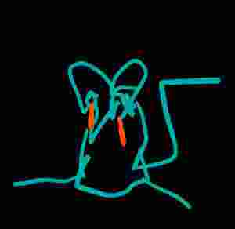

who is wren kennison?
wren kennison c. 2024
WREN KENNISON is a MUSICIAN who plays MUSIC.
WREN KENNISON is in LEPSIUS 24
WREN KENNISON also plays the FOOL.
WREN KENNISON makes too much music.
Why does this website exist?
-
I make too many things
- I just want to publish my 4 billion unpolished recordings and I don't mind if it doesn't look beautiful.
- I will finally be able to stop spending time organizing things and spend time making new things.
contact